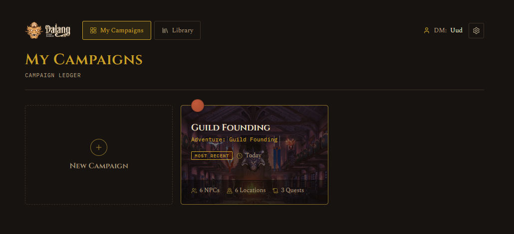
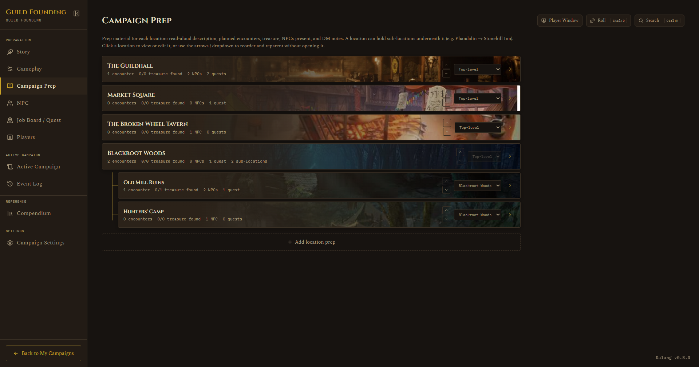
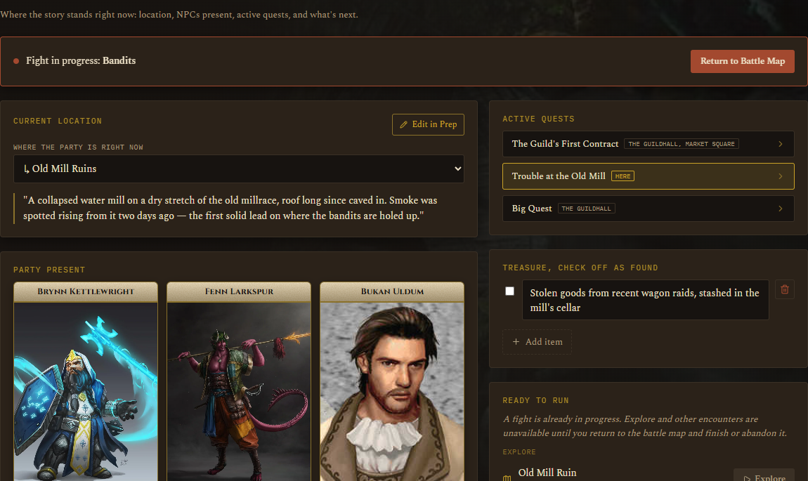
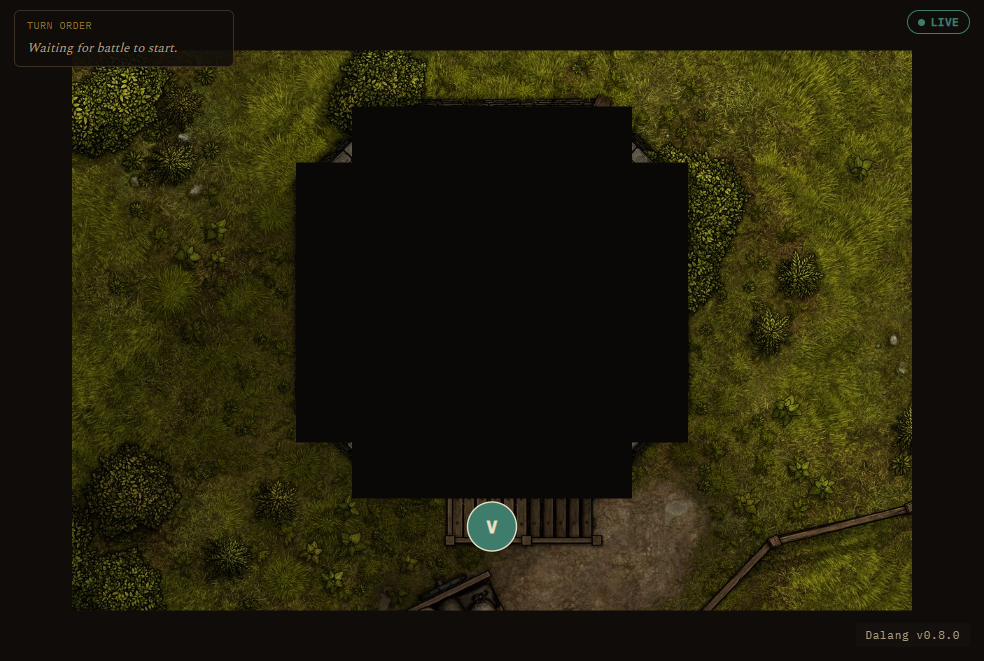

Prep and run your D&D campaign
The Dungeon Master's dashboard: the world and house rules, locations, NPCs, and a job board, plus a live battle map for the session and a read-only link that shows your players the current scene. Dalang runs on your desktop, and now in your browser.
Dalang Web is free during the beta. Dalang Desktop is free, pay what you want.

Desktop or browser
Both build the same campaign in the same file format. Start with either, a campaign moves between them in both directions.
The newer browser version. Nothing to install: make a free account and start in under a minute. Your campaigns are saved to your account, so you can prep from any computer and your players always open the same live link.
Create a free accountFree during the beta.
Where Dalang started, and still the core version. Runs on your Windows machine with no account and no limits, keeps everything in a local file, and works with no internet at all.
Get Dalang on itch.ioFree, pay what you want.
What you get
Every version of Dalang does all of this.
Prep your world
Story and house rules, a location hierarchy with encounters and treasure, an NPC table, and a job board. The pieces reference each other, so an NPC knows where it is and a job knows who gives it.
Run the session
An Active Campaign view for the current scene, a live battle map with tokens, initiative, and fog of war, a ruler and pings, a dice roller, and the full SRD compendium a click away.
A live view for players
One read-only link you share wherever your group talks. It shows the current location, the active jobs, and who is present, and during a fight the battle map, dice rolls, and your pings and drawings. Never your DM notes, secrets, or treasure.
Homebrew and a Library
Add your own monsters, magic items, and equipment. Save a finished adventure to your Library and start new campaigns from it.
Moves between desktop and browser
Export a whole campaign to a file and open it in the other version, or bring one back. Either direction, nothing is lost.
Yours, wherever you work
Dalang Web saves your campaigns to your account, so you can pick them up from any browser. Dalang Desktop keeps them in one local file on your machine, fully offline.
A closer look
Prep that connects
Build a location tree with encounters, treasure, and DM notes on each. Assign NPCs to places, hang jobs off the NPCs who give them, and set read-aloud text for when the party arrives. Nothing is a loose string of text you have to keep in sync by hand.

Run a live battle map
Calibrate a map image to a grid, drop tokens, roll initiative, and paint fog of war as the party explores. A ruler, pings, and freehand drawing are one click away, and every monster's stat block is right there when you need it.

Your players see the scene, live
Generate one link and share it. Players open it in any browser, no sign-in, and see the current location, the active jobs, and during a fight the battle map, the dice, and your pings, updating on its own. They never see what you have not shown them.

The Dalang Web free plan
Dalang Desktop has no limits. These caps apply only to the browser version during the beta.
What the free plan includes
- 2 campaigns
- Per campaign: 40 NPCs, 25 locations, 40 jobs, 8 players, 250 log entries
- 25 homebrew entries, 1 saved adventure
- Every feature. Nothing is locked behind a payment.
What "beta" means here
Dalang Web is new and still settling in. Your campaigns are looked after, and you can export a full copy any time from Campaign Settings, so it is worth keeping your own backup while the beta runs. Plans with higher limits are planned for later.
Questions
Is Dalang Web free?
Yes. Every feature is free while Dalang Web is in beta, nothing is locked behind a payment. The free plan covers 2 campaigns, with per-campaign limits of 40 NPCs, 25 locations, 40 jobs, 8 players, and 250 log entries. Plans with higher limits are planned for later.
Does Dalang Web run entirely in the browser?
Yes. There is nothing to install. You sign in and your campaigns are saved to your account, so you can open them from any browser.
Do my players need an account?
No. You generate one read-only link and share it wherever your group talks. Players open it in any browser with no sign-in.
Can players see my DM notes?
No. The player view shows the current location, the active jobs, who is present, and during a fight the battle map, dice rolls, and your pings. It never shows your DM notes, secrets, encounters, or treasure.
Is Dalang a virtual tabletop (VTT)?
Not exactly. Dalang is mainly a campaign prep and session tool. It does include a live battle map with tokens, initiative, and fog of war for running combat, but the focus is preparing and running the whole campaign, not just tactical maps.
What D&D rules does it use?
The built-in compendium covers the System Reference Document, both the 5.1 (2014) and 5.2 (2024) releases, and you can add your own homebrew monsters, magic items, and equipment.
Is there a desktop version of Dalang?
Yes. Dalang started as a Windows desktop app and still is one, with no account, no limits, and no internet needed. Dalang Web is the newer browser version. Get the desktop app on itch.io, or see every version on the Download page.
Can I move a campaign between Dalang Web and the desktop app?
Yes, in both directions. Export a whole campaign to a file from Campaign Settings and open it in Dalang Desktop, or bring one back. Nothing is lost either way.
Start a campaign
Spin up your first campaign and see if it fits how you run a game. Try it in the browser now, or get the desktop app.